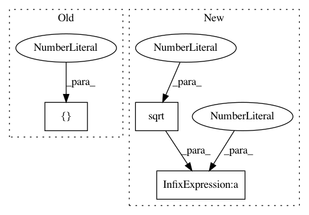

5dd8b471e4e5b1c7dbf9bf408e49ecadc35147f1,keras_frcnn/config.py,Config,__init__,#Config#,6
Before Change
self.anchor_box_scales = [128, 256, 512]
// anchor box ratios
self.anchor_box_ratios = [[1, 1], [1, 2], [2, 1]]
// size to resize the smallest side of the image
self.im_size = 600
After Change
self.anchor_box_scales = [128, 256, 512]
// anchor box ratios
self.anchor_box_ratios = [[1, 1], [1./math.sqrt(2), 2./math.sqrt(2)], [2./math.sqrt(2), 1./math.sqrt(2)]]
// size to resize the smallest side of the image
self.im_size = 600
In pattern: SUPERPATTERN
Frequency: 3
Non-data size: 3
Instances
Project Name: kbardool/keras-frcnn
Commit Name: 5dd8b471e4e5b1c7dbf9bf408e49ecadc35147f1
Time: 2017-10-05
Author: yannhenon@gmail.com
File Name: keras_frcnn/config.py
Class Name: Config
Method Name: __init__
Project Name: astroML/astroML
Commit Name: d1f932a01a3a2d73167dea9be55ffae747d1b66b
Time: 2018-11-30
Author: bsipocz@gmail.com
File Name: astroML/stats/tests/test_stats.py
Class Name:
Method Name: test_median_sigmaG
Project Name: astroML/astroML
Commit Name: d1f932a01a3a2d73167dea9be55ffae747d1b66b
Time: 2018-11-30
Author: bsipocz@gmail.com
File Name: astroML/stats/tests/test_stats.py
Class Name:
Method Name: test_sigmaG